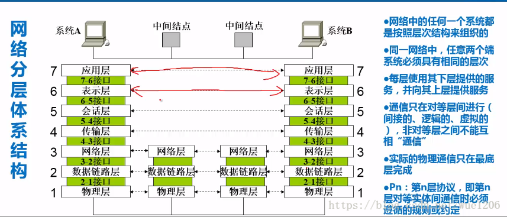
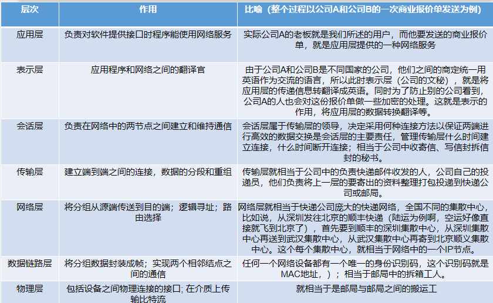
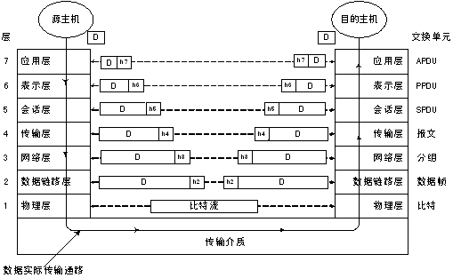
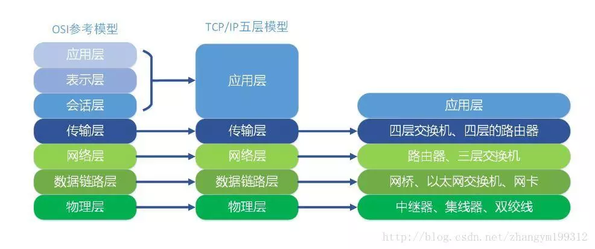
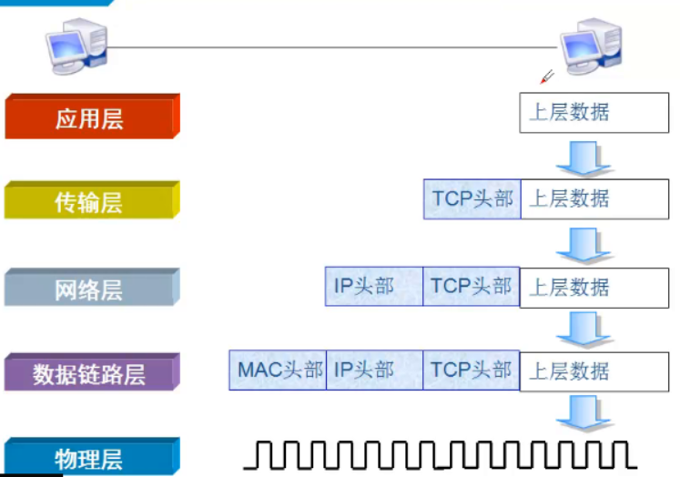
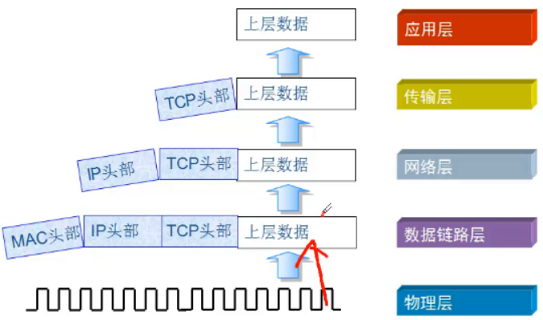

计算机网络层次模型
- 计算机网络体系结构是一个复杂的系统，可以将复杂的系统分成若干个容易处理的子系统，然后分而治之。
- 好处在于：
- a. 各层之间是互相独立的；
- b. 灵活性好，便于维护和实现;
- c. 结构可以分割,促进标准化工作。
- 计算机网络通信的理论示意图
- 
OSI 参考模型：7层
——–》做参考使用的，实际中并没有使用
记忆：应表会传往树屋
- 应 —》应用层 —-》某些程序
- 表 —》表示层
- 会 —》会话层
- 传—-》传输层 —》端口号
- 往—-》网络层 —》IP地址
- 树—-》数据链路层
- 屋—-》物理层

OSI各层功能定义
应用层
- 应用层为操作系统或网络应用程序提供访问网络服务的接口，是最接近用户的一层。
- 这一层为用户的应用程序（例如电子邮件、文件传输和终端仿真）提供网络服务。
表示层
- 表示层完成被传输数据的表示的解释工作，包括数据转换、数据加密和数据压缩等。
会话层
- 会话层为彼此合作的实体提供建立、维护和结束会话连接的功能；完成通信进程的逻辑名字和物理名字间的对应；提供会话管理。
传输层
- 传输层为OSI网络体系结构中最核心的一层，它把实际使用的通信子网与高层应用分开，提供发送端和接收端之间的高可靠、低成本的数据传输。
- 传输层协议为会话层提供面向连接的和无连接的两种传输服务。
网络层
- 为传输层实体提供端到端的交换网络数据的传送功能。网络层完成对通信子网的运行控制。它负责选择从发送端传输数据包到达接收端的路由，另外，网络层还负责通信子网中的分组、拥塞控制和记账等。
数据链路层
- 数据链路层负责在两个相邻结点间的线路上，无差错地传送以帧为单位的数据，并进行流量控制，数据链路层加强物理层原始比特流的传输功能，使之对网络呈现为一条无差错链路。
物理层
- 提供为建立、维护和拆除物理链路所需的机械、电气功能和规程的特性；提供有关在传输介质上传输非结构的位流及物理链路故障检测指示。
- 物理层保证在通信信道上传输比特流。传输媒体可以使同轴电缆、光纤、通信卫星和微波等。
- 物理层协议被设计来控制传输媒体，以提供传输媒体对计算机系统的独立性。
OSI参考模型各层小结

OSI工作流程
数据在发送时由第七层至第一层依次封装，接收端在收到数据包后从第一层至第七层依次拆包，如图：

TCP/IP模型：5层
正在使用的模型—–》每台电脑都支持TCP/IP协议
分层：
- 应用层 —》HTTP –》数据（DATA）
- 传输层—-》TCP/UDP —》段(segment)
- 网络层 –>IP —》包（报文Packet）—》路由器
- 数据链路层 —》帧(Frame) —》交换机
- 物理层—》比特流(Bit) —》网卡、网线
OSI和TCP/IP模型的对比

数据封装和解封装
数据封装过程

数据解封装过程
